Etapa 8 • telas 05 a 08
Capturas em 1440 × 900, salvo indicação. Antes: Etapa 7. Agora: uma composição própria por tela, sem cartões repetidos; conteúdo, preços, classificações e comportamentos inalterados.
05 Demonstração • roteiro de 5 passos à esquerda, produto real à direita
Os cinco passos ficam sempre visíveis (o atual aberto, os feitos marcados); o estado do módulo em números grandes. A janela do módulo não mudou. No 3D, as cinco estações acompanham o passo.
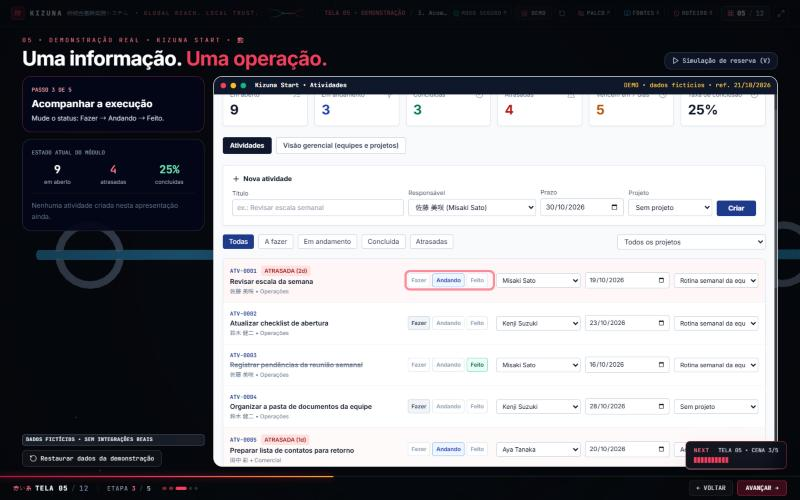
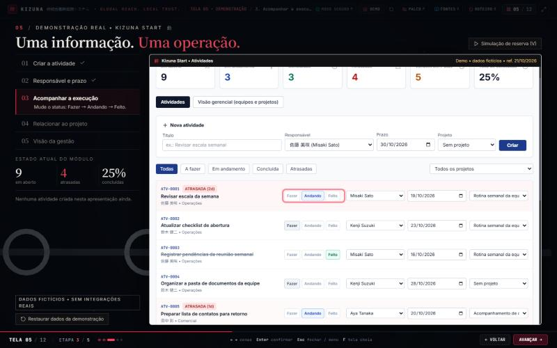
06 Adaptação • faixas: argumento à esquerda, o japonês como protagonista
Cada pilar vira uma faixa; o texto em japonês, como aparece no Kizuna, é o elemento principal; "Ver tradução" mantido. Disco vermelho decorativo do 3D removido.
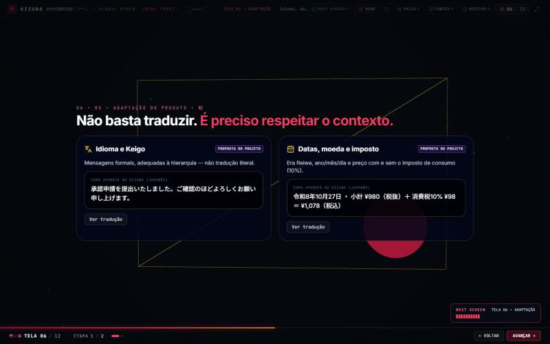
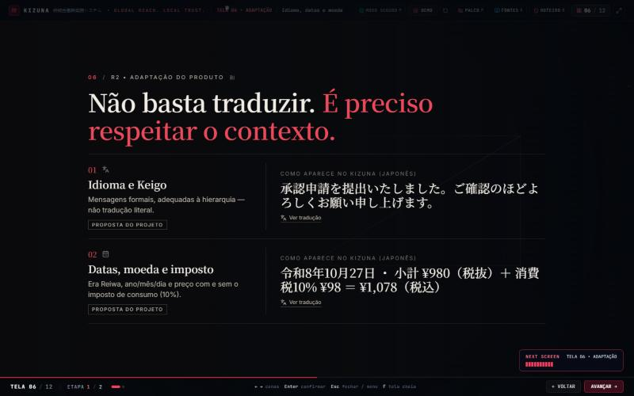
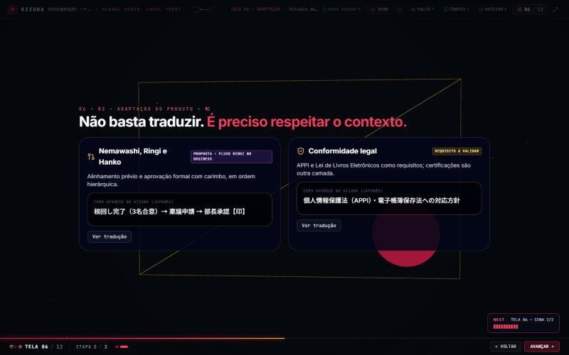
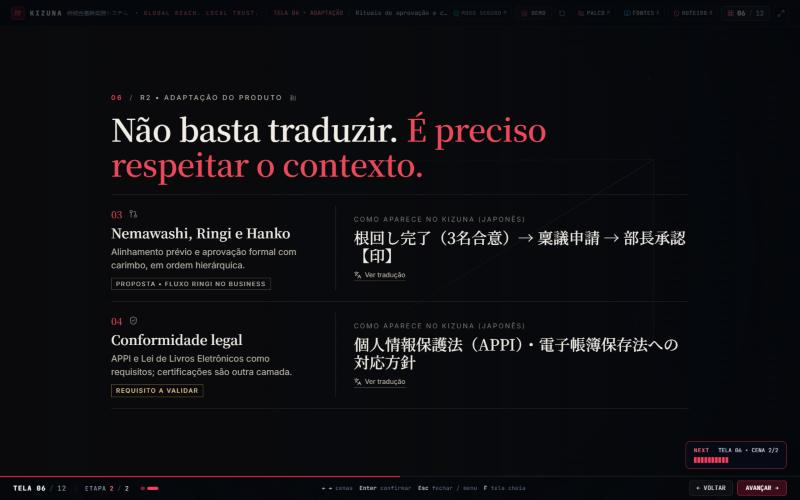
07 Confiança • tríptico em volta do portão
Proposta fora do portão (esquerda), decisão humana dentro dele (centro, com o Hanko como único botão vermelho), execução e registro depois dele (direita). Os pilares 3D caem nos vãos entre as colunas; ao aprovar, as grades sobem e somem.
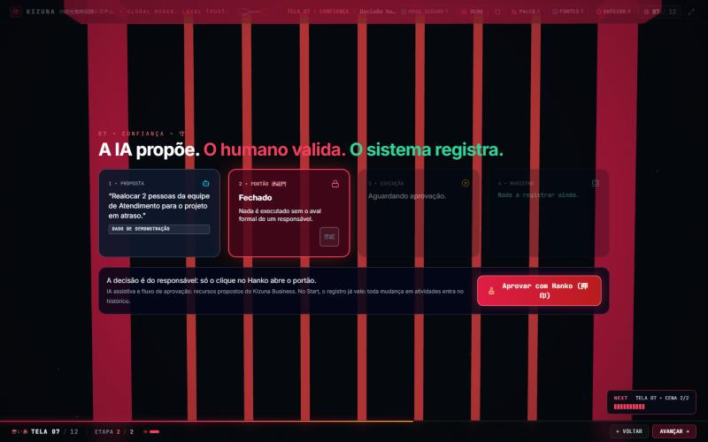
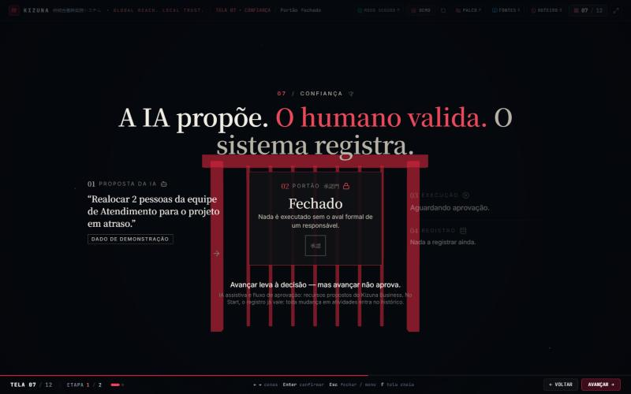
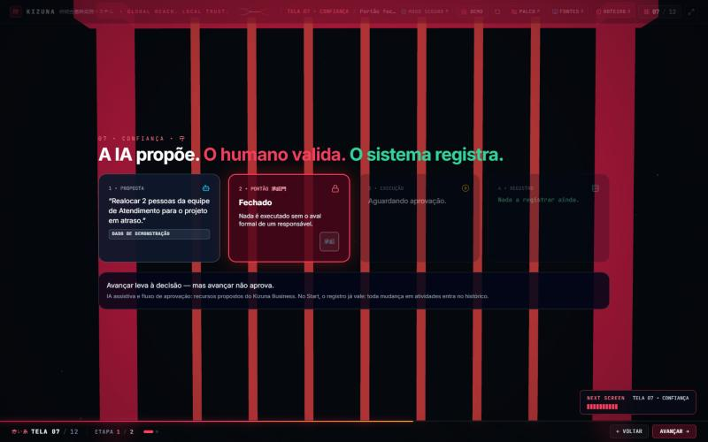
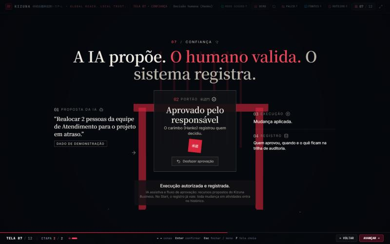
08 Planos e receita • anéis dominantes e a conta da receita
Cena 1: anéis grandes (equipe → departamentos → empresa) e o escopo em lista editorial. Cena 2: usuários → MRR e ARR em números grandes → licenças, implantação e integrações. Cubos e barras 3D neutros e recuados.
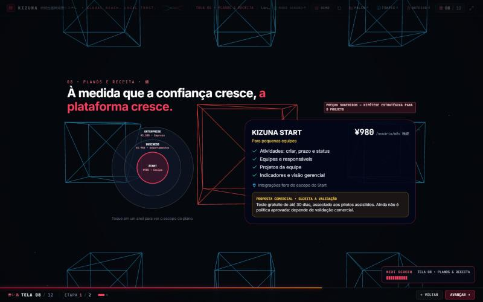
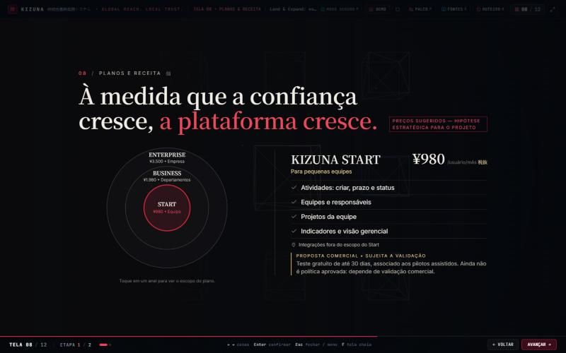
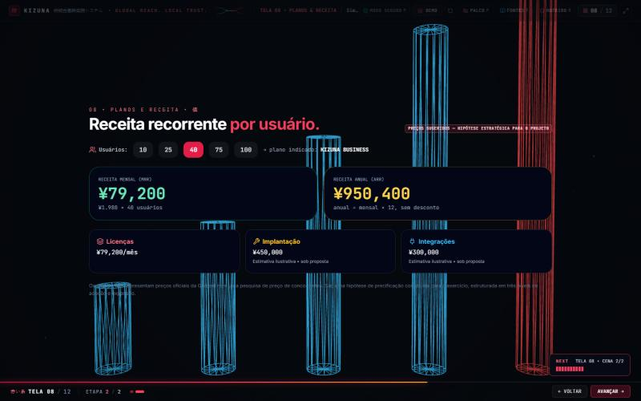
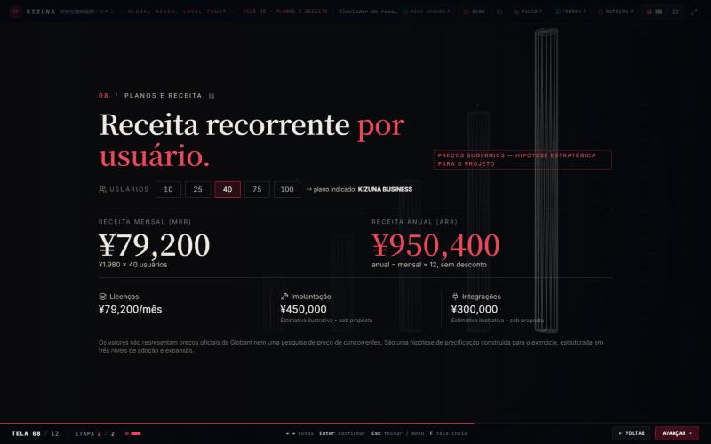
Tamanhos 800 × 600 e 1024 × 768
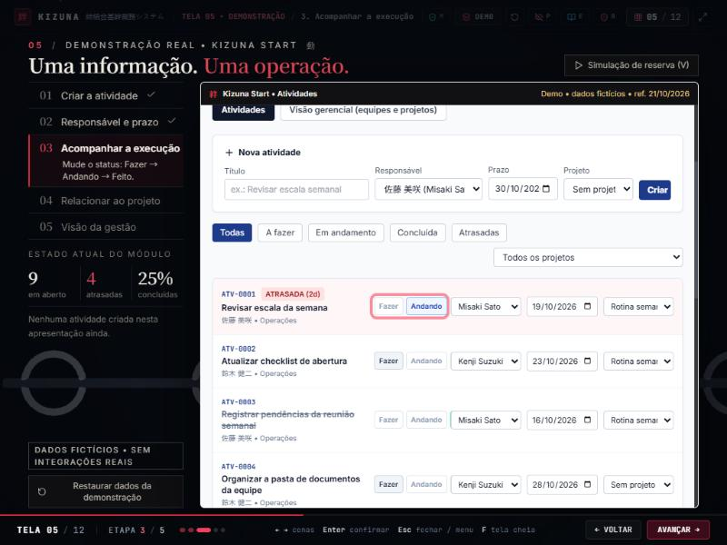
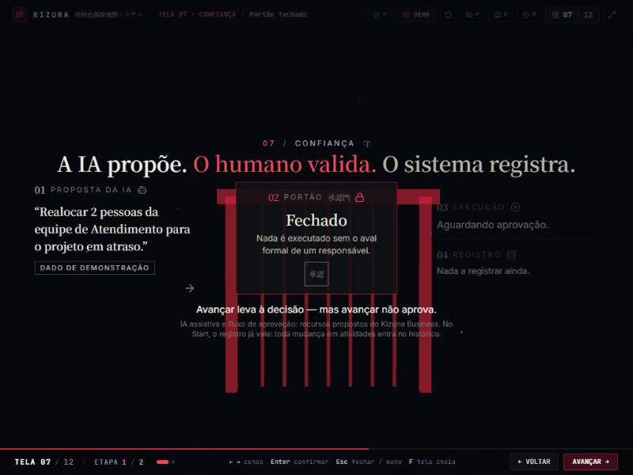
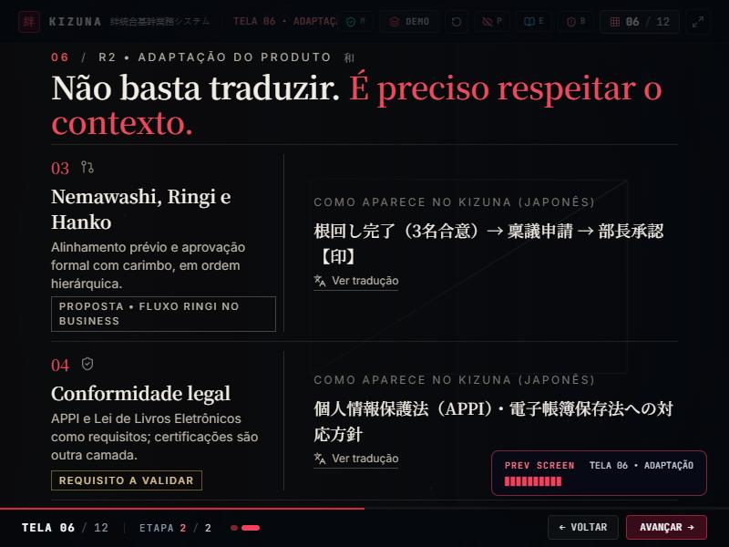
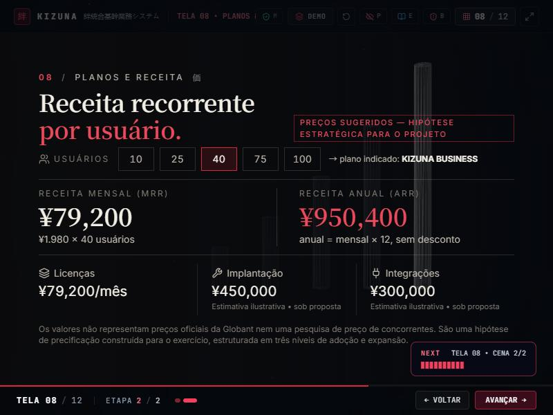